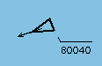

AIS
Descripción:
El modelo simula que una unidad dispone de contacto AIS de todas aquellas unidades que se encuentren dentro de alcance radio y que dispongan de equipo AIS que esté transmitiendo (equipo encendido en modo activo o genérico y con antena VHF disponible) en claro (encriptación no activada).
Si una unidad está transmitiendo AIS con encriptación activada, otra unidad sólo dispondrá de contacto de la misma si es del mismo bando.
Comprobaciones:
Previamente a la evaluación del modelo, se realizan las siguientes comprobaciones de condiciones necesarias para la recepción de contactos AIS:
Cálculos:
El alcance radio para la recepción de contactos AIS es el siguiente:
Alcance máximo = Alcance_equipo * Factor_prop_comunicaciones
Alcance Equipo = Alcance Horizonte Radar * FactorVHF.
FactorVHF configurables en Galeon.ini.
Alcance Horizonte Radar calculado como se indica en Modelos - Sensores – Radar.
Evaluación:
El equipo AIS de una unidad, obtiene contacto AIS de todas aquellas unidades que se encuentren dentro de alcance radio y que dispongan de equipo AIS que esté transmitiendo, es decir que tenga encendido el equipo en modo activo o genérico y con antena VHF disponible, y sin encriptar la transmisión.
Igualmente, los mensajes de texto libre transmitidos por una unidad, serán recibidos por aquellas unidades que cumplan las condiciones establecidas en el párrafo anterior.
Si una unidad está transmitiendo AIS con encriptación activada, otra unidad sólo dispondrá de contacto de la misma si es del mismo bando.
Si una unidad está transmitiendo en modo pasivo, recibe la información del resto de unidades, pero no transmite información propia.
De cada contacto AIS se obtiene la siguiente información:
La información obtenida debe coincidir con la que se introdujo para cada unidad en la preparación, a no ser que el alumno que controle las unidades correspondientes modifique los datos transmitidos por el AIS y aplique engaño. En este caso, el contacto aparecerá con la información introducida por el alumno.
Las detecciones obtenidas por AIS no tienen datos de identificación de traza. Se representan con el siguiente símbolo:
